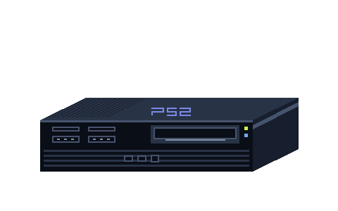
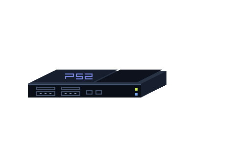

الأصلي · SCPH-39001
301 × 78 × 182 mm (عرض × ارتفاع × عمق)
درج أمامي، وحجرة توسعة خلفية، ومزوّد طاقة داخلي. يضم مخرج AV ومخرجًا صوتيًا بصريًا، ولهذا الطراز منفذ i.LINK أمامي.
CARTO PIXEL MUSEUM / 01
جولة حول SCPH-39001، من منافذ الواجهة إلى اللوحة الرئيسية. اختر زاوية، ثم اضغط رقمًا على الرسم أو اسم الجزء أسفله.

301 × 78 × 182 mm (عرض × ارتفاع × عمق)
درج أمامي، وحجرة توسعة خلفية، ومزوّد طاقة داخلي. يضم مخرج AV ومخرجًا صوتيًا بصريًا، ولهذا الطراز منفذ i.LINK أمامي.

230 × 28 × 152 mm (عرض × ارتفاع × عمق)
غطاء أقراص علوي، وشبكة Ethernet مدمجة، ومحوّل طاقة خارجي. يحتفظ بمنفذي تحكم وفتحتي ذاكرة ومخرجي AV والصوت البصري. الرسمان بالمقياس البصري نفسه تقريبًا.
فصل الطبقات توضيحي. تُبرز الرسوم الوحدات الرئيسية، وقد تختلف تفاصيلها بين مراجعات الجهاز.